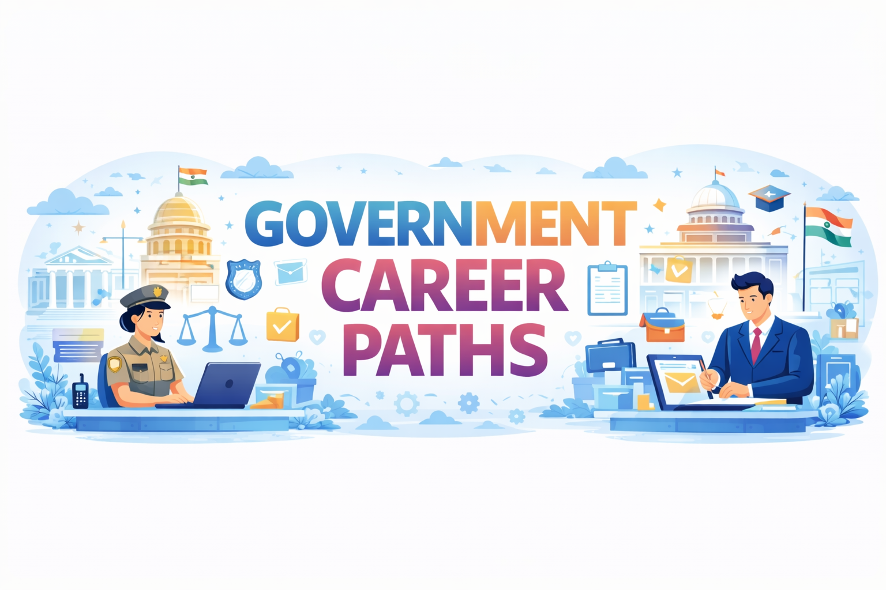
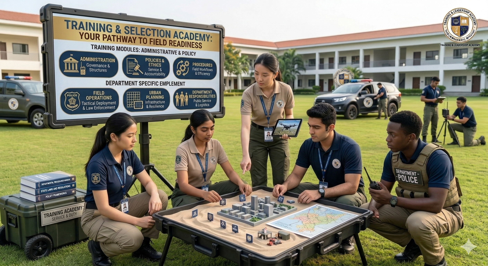

A government career offers stability, respect, and the opportunity to serve the nation. Professionals work in administration, public services, defense, law enforcement, public policy, and various departments that support national development.
Build strong fundamentals in General Knowledge, Civics, History, Political Science, and analytical reasoning. Develop discipline, communication skills, and awareness of current affairs.
Complete a Bachelor's degree in any recognized field such as Arts, Commerce, Science, Law, Engineering, or Public Administration. Many competitive exams require graduation as a minimum qualification.
Prepare for government exams such as civil services, banking, SSC, railways, defense, or state-level public service commissions. Focus on aptitude, reasoning, general studies, and current affairs.

After clearing exams and interviews, undergo official training programs to understand administration, policies, procedures, and department-specific responsibilities.
Begin your service as an officer, clerk, inspector, analyst, or other departmental roles depending on the exam cleared. Gain experience in public service operations.
With experience and promotions, advance to senior administrative or policy-making roles. Lead departments, manage public resources, and contribute to national governance and development.